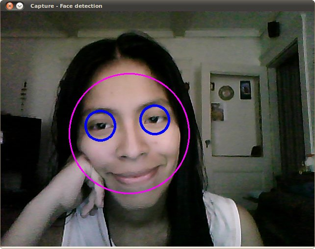
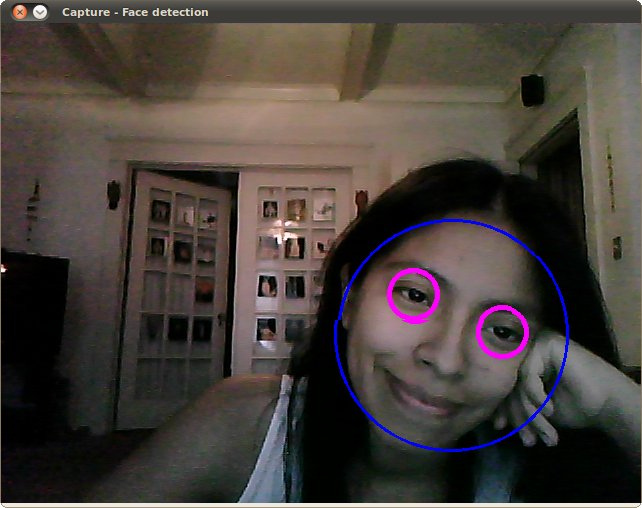

In this tutorial you will learn how to:
This tutorial code’s is shown lines below. You can also download it from here . The second version (using LBP for face detection) can be found here
#include "opencv2/objdetect.hpp"
#include "opencv2/highgui.hpp"
#include "opencv2/imgproc.hpp"
#include <iostream>
#include <stdio.h>
using namespace std;
using namespace cv;
/* Function Headers */
void detectAndDisplay( Mat frame );
/* Global variables */
String face_cascade_name = "haarcascade_frontalface_alt.xml";
String eyes_cascade_name = "haarcascade_eye_tree_eyeglasses.xml";
CascadeClassifier face_cascade;
CascadeClassifier eyes_cascade;
String window_name = "Capture - Face detection";
/* @function main */
int main( void )
{
VideoCapture capture;
Mat frame;
//-- 1. Load the cascades
if( !face_cascade.load( face_cascade_name ) ){ printf("--(!)Error loading face cascade\n"); return -1; };
if( !eyes_cascade.load( eyes_cascade_name ) ){ printf("--(!)Error loading eyes cascade\n"); return -1; };
//-- 2. Read the video stream
capture.open( -1 );
if ( ! capture.isOpened() ) { printf("--(!)Error opening video capture\n"); return -1; }
while ( capture.read(frame) )
{
if( frame.empty() )
{
printf(" --(!) No captured frame -- Break!");
break;
}
//-- 3. Apply the classifier to the frame
detectAndDisplay( frame );
int c = waitKey(10);
if( (char)c == 27 ) { break; } // escape
}
return 0;
}
/* @function detectAndDisplay */
void detectAndDisplay( Mat frame )
{
std::vector<Rect> faces;
Mat frame_gray;
cvtColor( frame, frame_gray, COLOR_BGR2GRAY );
equalizeHist( frame_gray, frame_gray );
//-- Detect faces
face_cascade.detectMultiScale( frame_gray, faces, 1.1, 2, 0|CASCADE_SCALE_IMAGE, Size(30, 30) );
for( size_t i = 0; i < faces.size(); i++ )
{
Point center( faces[i].x + faces[i].width/2, faces[i].y + faces[i].height/2 );
ellipse( frame, center, Size( faces[i].width/2, faces[i].height/2), 0, 0, 360, Scalar( 255, 0, 255 ), 4, 8, 0 );
Mat faceROI = frame_gray( faces[i] );
std::vector<Rect> eyes;
//-- In each face, detect eyes
eyes_cascade.detectMultiScale( faceROI, eyes, 1.1, 2, 0 |CASCADE_SCALE_IMAGE, Size(30, 30) );
for( size_t j = 0; j < eyes.size(); j++ )
{
Point eye_center( faces[i].x + eyes[j].x + eyes[j].width/2, faces[i].y + eyes[j].y + eyes[j].height/2 );
int radius = cvRound( (eyes[j].width + eyes[j].height)*0.25 );
circle( frame, eye_center, radius, Scalar( 255, 0, 0 ), 4, 8, 0 );
}
}
//-- Show what you got
imshow( window_name, frame );
}
Here is the result of running the code above and using as input the video stream of a build-in webcam:
Remember to copy the files haarcascade_frontalface_alt.xml and haarcascade_eye_tree_eyeglasses.xml in your current directory. They are located in opencv/data/haarcascades
This is the result of using the file lbpcascade_frontalface.xml (LBP trained) for the face detection. For the eyes we keep using the file used in the tutorial.
{kind=link}
{kind=link}